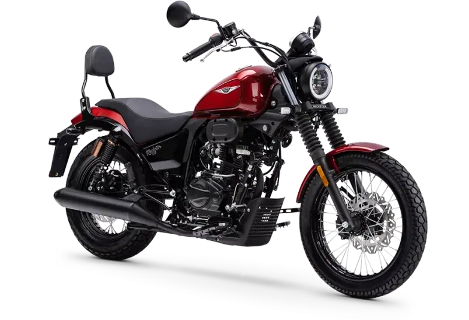
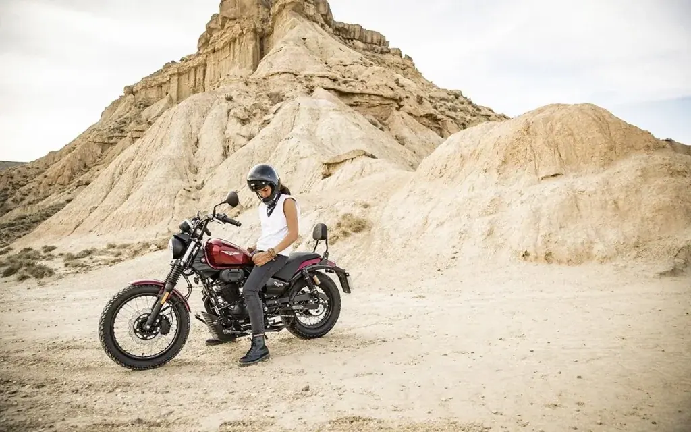
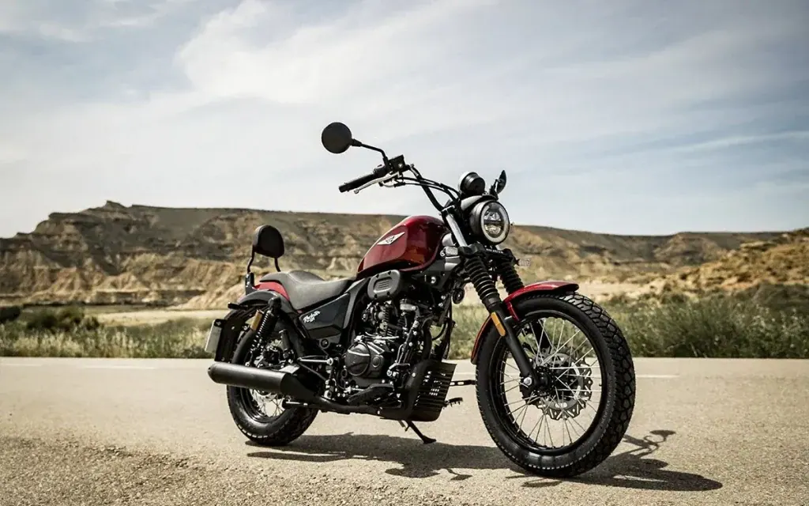
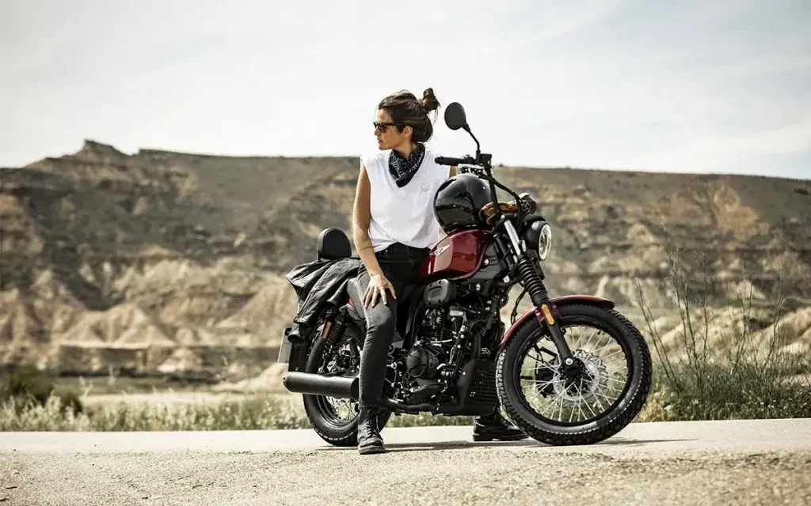
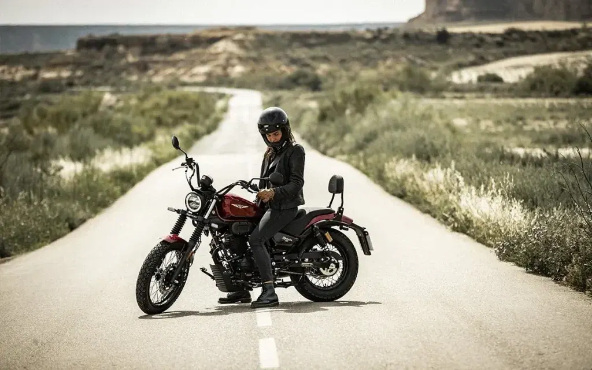

Macbor
Rockster 125 EVO
B·A1 125 cc · Clásicas
Propuesta de OpsPilot para Expomoto Córdoba, en revisión. No es la web oficial: expomotocordoba.es
Inicio › Motos › Macbor › Rockster 410cc

Macbor
Escaparse es encontrarse, no huyas.
Precio y financiación: te los damos al momento por teléfono (pendientes de publicar en la web).




La libertad no se busca, ella te encuentra. Disfrútala en tus escapadas diarias y déjate llevar… Porque la verdadera libertad sólo se encuentra siendo tú mismo. ¿La sientes? Escúchala. Es tu libertad.
La Rockster 410 llega para ampliar el icónico segmento Custom, una moto de media cilindrada que combina fiabilidad , potencia y un diseño vanguardista .
Está equipada con un sólido motor bicilíndrico de 8 válvulas que entrega 42 CV de potencia y asegura una respuesta noble y segura.
El dashboard TFT circular a color con conectividad mirroring incluye velocidad, cuentarrevoluciones, nivel de combustible, marcha engranada, control de temperatura del vehículo, indicadores de intermitentes y luces, reloj, kilometraje acumulado y trip.
Sus manetas de freno y embrague regulables ofrecen mayor confort y opciones de personalización. El sistema de control de tracción (TCS) junto al sistema de frenado ABS mejora la seguridad, estabilidad y rendimiento para una conducción más segura y cómoda.
Una moto polivalente para el día a día en la ciudad y también para devorar kilómetros en carretera sin preocuparse de nada más que de disfrutar. Todo descaro y diversión para el carnet A2 con pura estética minimalista Custom Bobber .
| Motor | Monocilíndrico, 4 Tiempos |
|---|---|
| Cilindrada | 124,7 cc |
| Diámetro por carrera | 52,4 x 57,8 mm |
| Ratio | 9,5:1 |
| Alimentación | Inyección Electrónica – Delphi |
| Encendido | Electrónico – Delphi |
| Arranque | Eléctrico |
| Potencia | 7 kW / 8500 rpm |
| Par motor | 9 Nm / 6500 rpm |
| Capacidad | 13,5 |
| Consumo | 2,1 L/100 km |
| Velocidad Máxima | 100 |
| Dimensiones | 2090 x 890 x 1185 (largo x ancho x alto) |
| Altura Asiento | 730 mm |
| Peso Vacío | 130 Kg |
| Distancia entre ejes | 1435 mm |
| Distancia mínima al suelo | 145 mm |
| Caja de cambios | Manual |
| Neumático Delantero | 100 / 90 – 18 57P |
| Neumático Trasero | 130 / 90 – 15 66P |
| Suspensión Delantera | Horquilla telescópica hidráulica diam. 37 mm |
| Suspensión Trasera | Doble Amortiguador con depósito gas separado |
| Freno | Disco Delantero 267 mm y Pinza Flotante tres pistones. Disco Trasero 240 mm y Pinza Flotante simple pistón. CBS (Sistema Combinado de Frenada) |
| Instrumentos | LCD |
| Faro | LED |
| Piloto Trasero | LED |
| Colores | Rojo, Negro |
Datos de la marca, tal como se publican en expomotocordoba.es.